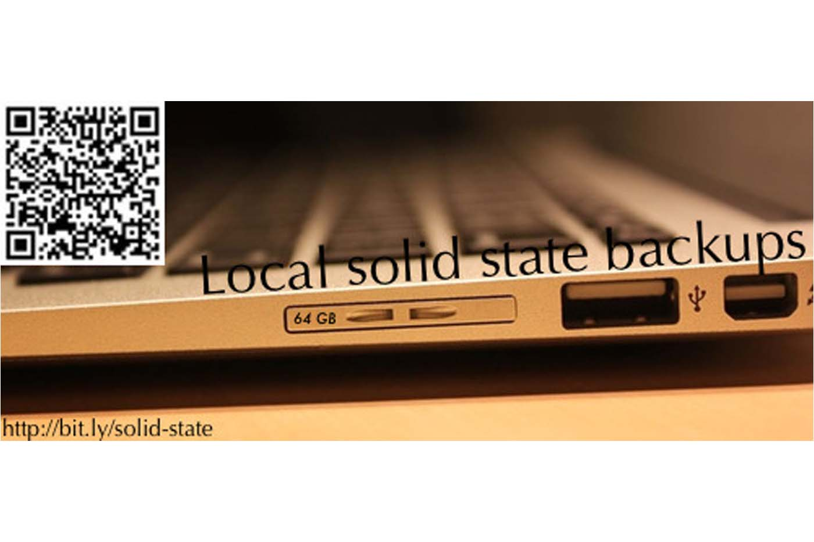
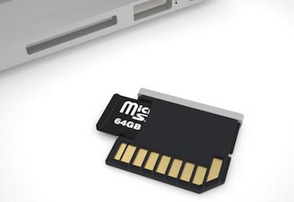
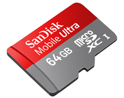
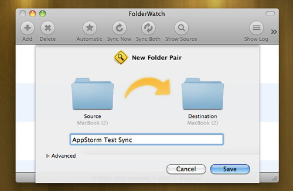

Local solid state backups
Originally published at https://singularityhacker.com/local-solid-state-backups

Its a real pain to always be plugging in an external HDD to backup your computer. For that reason, people tend to not do it as frequently as they should. Another solution is to do it wirelessly over the network with some kind of NAS but that can be slow and it’s only available when you’re in THAT network.
Allow me to introduce you to local continuous solid-state backups. You’ll need three things.
1. The Nifty micro SD card adapter
Nifty is a small adapter that lets you hold a micro SD card in your computer completely flush. You hardly use that slot anyways! Get the original or a generic one.

2. A Micro SD card
It doesn’t have to be huge but the bigger, the better. The whole point of this setup is ‘set it and forget it’. You don’t want to be running into storage problems.

3. A folder syncing utility/script
I’m currently using FolderWatch for Mac but there are a million ways to do this.

Now you can set key folders on your machine to always sync with the folders on the card. I have these folders continuously backed up:
- Applications
- Library
- Downloads
- Documents
- Dropbox
- Google Drive
In conclusion, still back up your stuff to an external hdd! But now, maybe you can get away with doing it only once a week. In the mean time, enjoy your nifty setup and feel free to yank that card out with a paper clip if Agent Smith or the NSA comes after you.